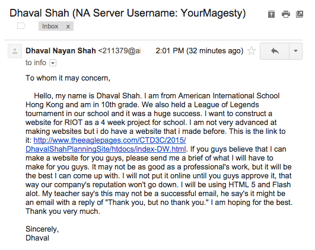

- Audience: Fans of League of Legends
- Brief: 
- Audience: STudents of classes, CTD3c and CST2C, that are in need of help.They can refer to this website allowing themselves to answer their own questions.
- Brief: I will be creating a webpage that allows the students to answer their questions in a thread-like way.
It would look something like this: